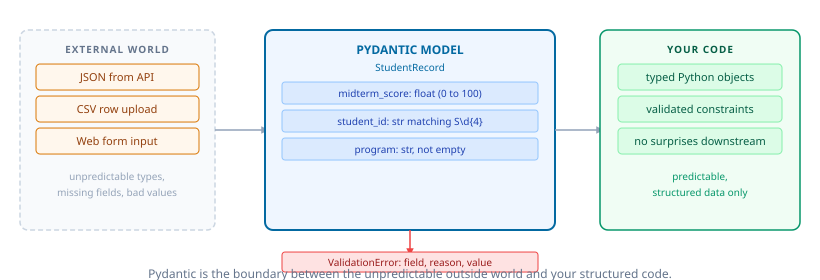

from dataclasses import dataclass
from pydantic import BaseModelChapter 25: Data validation with Pydantic


You have just finished building the grade-predictor pipeline. It reads a CSV, computes weighted scores, applies a pass threshold, and writes results to a file. You add type annotations everywhere. Your type checker passes clean. You deploy.
Two weeks later, a bug report arrives: the pipeline produced a passing grade for a student whose midterm_score was logged as 150.0 , which is impossible on a 100-point scale. The pipeline did not crash. The math ran correctly on the wrong number. A downstream report was wrong, and nobody noticed until a student appealed their grade.
The problem was not the computation. It was that nothing stopped the invalid value from entering the pipeline in the first place. Type annotations say what type a value should be. They do not say whether a value of that type makes sense at runtime. midterm_score: float accepts any float: 150.0, -20.0, float("inf"). The annotation is a hint to the reader and the type checker. It is not a gate.
Pydantic (pydantic.dev) turns annotations into gates. Define a model, describe the constraints, and Pydantic enforces them on every construction, before the value reaches any computation. One validation point at entry; everything downstream trusts the types.
The diagram below shows where Pydantic sits in the pipeline: external data enters, Pydantic either validates and coerces it into a typed model or raises ValidationError at the boundary, and only clean, typed data reaches your code.

A Python dataclass accepts any value for any field, regardless of what the annotation says. A Pydantic model validates on construction. Pass the wrong type and it raises an error immediately, before the value reaches any computation:
Both classes use the same annotations but behave differently. The @dataclass stores whatever you pass; BaseModel validates it:
@dataclass
class DataclassStudent:
student_id: str
midterm_score: float
class PydanticStudent(BaseModel):
student_id: str
midterm_score: floatConstruct both with midterm_score="eighty". The dataclass stores the string silently; Pydantic rejects it before the object is created:
# Dataclass accepts "eighty" silently
dc = DataclassStudent(student_id="S0001", midterm_score="eighty")
print(dc.midterm_score) # "eighty": no error
# Pydantic raises ValidationError immediately
try:
ps = PydanticStudent(student_id="S0001", midterm_score="eighty")
except Exception as e:
print(type(e).__name__, e)eighty
ValidationError 1 validation error for PydanticStudent
midterm_score
Input should be a valid number, unable to parse string as a number [type=float_parsing, input_value='eighty', input_type=str]
For further information visit https://errors.pydantic.dev/2.12/v/float_parsingPydantic also coerces where the conversion is unambiguous. "85" becomes 85.0 for a float field; "true" becomes True for a bool field. This makes it practical for inputs from CSV files, APIs, or environment variables, where everything arrives as a string.
Key Concept: Validate at the boundary, not inside the pipeline
A pipeline that validates its inputs at the entry point can trust every value it works with from that point on. A pipeline that validates inside individual functions repeats the same checks everywhere and still misses values that enter through unexpected paths. Pydantic at the boundary is the architectural principle; the model is the mechanism.
2. StudentRecord: Validating Incoming Data
Define a model for a student record coming in from a CSV or API. The model_config attribute controls Pydantic v2’s behaviour:
import re
from typing import Annotated
from pydantic import BaseModel, Field, ValidationError, field_validator
class StudentRecord(BaseModel):
model_config = {"str_strip_whitespace": True, "validate_assignment": True}
student_id: str
midterm_score: Annotated[float, Field(ge=0.0, le=100.0)]
final_score: Annotated[float, Field(ge=0.0, le=100.0)]
project_score: Annotated[float, Field(ge=0.0, le=100.0)]
program: str
has_internet: bool = True
@field_validator("student_id")
@classmethod
def student_id_format(cls, v: str) -> str:
if not re.match(r"^S\d{4}$", v):
raise ValueError(f"student_id must match S followed by 4 digits, got '{v}'")
return vField(ge=0.0, le=100.0) means “greater than or equal to 0, less than or equal to 100”. Pydantic v2 uses Annotated with Field for constraints; the old validator decorator is replaced by field_validator.
Try it:
# Valid record: succeeds
record = StudentRecord(
student_id="S0042",
midterm_score=78.5,
final_score=82.0,
project_score="91.0", # string coerced to float
program="CS",
)
print(record.model_dump())
# Invalid: midterm over 100
try:
bad = StudentRecord(
student_id="S0042",
midterm_score=150.0, # violates le=100.0
final_score=80.0,
project_score=75.0,
program="CS",
)
except ValidationError as e:
print(e){'student_id': 'S0042', 'midterm_score': 78.5, 'final_score': 82.0, 'project_score': 91.0, 'program': 'CS', 'has_internet': True}
1 validation error for StudentRecord
midterm_score
Input should be less than or equal to 100 [type=less_than_equal, input_value=150.0, input_type=float]
For further information visit https://errors.pydantic.dev/2.12/v/less_than_equal
Activity 1: extend StudentRecord
Add a
Add a
semester field to StudentRecord that must be one of “Fall”, “Spring”, “Summer”. Use Literal[“Fall”, “Spring”, “Summer”] as the type annotation. Try creating a record with semester=“Winter” and confirm it raises a ValidationError.
from typing import Literal
class StudentRecord(BaseModel):
...
semester: Literal["Fall", "Spring", "Summer"]
StudentRecord(..., semester="Winter") # should raise ValidationError
3. Field Validators and Cross-Field Validators
A @field_validator runs on a single field after type coercion. Use it for business rules that go beyond a simple range check.
A @model_validator runs after all fields are set and has access to the complete model. Use it for cross-field constraints: “weights must sum to 1.0”:
from typing import Annotated
from pydantic import BaseModel, Field, ValidationError, field_validator, model_validator
class GradeConfig(BaseModel):
midterm_weight: Annotated[float, Field(gt=0.0, lt=1.0)] = 0.30
final_weight: Annotated[float, Field(gt=0.0, lt=1.0)] = 0.45
project_weight: Annotated[float, Field(gt=0.0, lt=1.0)] = 0.25
pass_threshold: Annotated[float, Field(ge=50.0, le=80.0)] = 60.0
@model_validator(mode="after")
def weights_must_sum_to_one(self) -> "GradeConfig":
total = self.midterm_weight + self.final_weight + self.project_weight
if abs(total - 1.0) > 1e-6:
raise ValueError(
f"Weights must sum to 1.0, got {total:.6f}. "
f"Adjust midterm ({self.midterm_weight}), "
f"final ({self.final_weight}), or project ({self.project_weight})."
)
return selfThe mode="after" argument means the validator runs after Pydantic has already validated and coerced every individual field. Use mode="before" when you need to transform raw input before type coercion.
# Valid: weights sum to 1.0
cfg = GradeConfig(midterm_weight=0.3, final_weight=0.5, project_weight=0.2)
print(cfg)
# Invalid: weights sum to 1.05
try:
bad_cfg = GradeConfig(midterm_weight=0.4, final_weight=0.45, project_weight=0.2)
except ValidationError as e:
print(e)midterm_weight=0.3 final_weight=0.5 project_weight=0.2 pass_threshold=60.0
1 validation error for GradeConfig
Value error, Weights must sum to 1.0, got 1.050000. Adjust midterm (0.4), final (0.45), or project (0.2). [type=value_error, input_value={'midterm_weight': 0.4, '..., 'project_weight': 0.2}, input_type=dict]
For further information visit https://errors.pydantic.dev/2.12/v/value_error Pro Tip: Use model_dump() and model_validate() to round-trip through dicts and JSON
config.model_dump() converts a Pydantic model to a plain Python dict. GradeConfig.model_validate(some_dict) validates and constructs a model from a dict. GradeConfig.model_validate_json(json_string) parses and validates from a JSON string. These three methods cover the most common I/O patterns for config files, API payloads, and database rows.
Activity 2: config from a Dict
Create a
Create a
GradeConfig from a Python dict using model_validate(). Then call model_dump() to get a plain dict back. Confirm the two dicts have the same values. Also confirm that a dict with weights that do not sum to 1.0 raises a ValidationError.
raw = {"midterm_weight": 0.3, "final_weight": 0.45, "project_weight": 0.25}
cfg = GradeConfig.model_validate(raw)
assert cfg.model_dump() == {**raw, "pass_threshold": 60.0}
4. CLI Interfaces: argparse and typer
Every ML pipeline eventually needs to be run from the command line: python train.py --data-path data/train.csv --epochs 50 --threshold 0.65. Two tools exist for this: argparse (stdlib, the traditional approach) and typer (modern, annotation-based, by the same author as FastAPI).
argparse: the baseline
argparse requires you to declare each argument manually, convert strings to types yourself, and write help text by hand:
import argparse
# argparse: explicit, verbose, manual type conversion
parser = argparse.ArgumentParser(description="Grade predictor CLI")
parser.add_argument("--data-path", type=str, default="data/university_analytics.csv")
parser.add_argument("--pass-threshold", type=float, default=60.0)
parser.add_argument("--debug", action="store_true", default=False)
# In a script: args = parser.parse_args()
# In a notebook: simulate with a list
args = parser.parse_args(["--data-path", "data/train.csv", "--pass-threshold", "65.0"])
print(args.data_path, args.pass_threshold, args.debug)data/train.csv 65.0 Falsetyper: annotations as the CLI spec
typer reads your function’s type annotations and builds the parser for you. The same type hints that describe the function’s signature generate --help, automatic type coercion, and validation:
# pip install typer / uv add typer
# This is a module-level demo: run as: python script.py --data-path ... from terminal
import typer
app = typer.Typer()
@app.command()
def train(
data_path: str = typer.Option("data/university_analytics.csv", help="Path to CSV"),
pass_threshold: float = typer.Option(60.0, min=50.0, max=80.0, help="Pass threshold"),
debug: bool = typer.Option(False, help="Enable debug logging"),
) -> None:
typer.echo(f"Loading data from: {data_path}")
typer.echo(f"Pass threshold: {pass_threshold}")
typer.echo(f"Debug: {debug}")
# In a real script: if __name__ == "__main__": app()
# Running `python train.py --help` auto-generates full usage docs.typer + pydantic-settings: the DS/MLOps pattern
In production, you typically want two sources of configuration: environment variables (for secrets, deployment targets) and CLI arguments (for per-run overrides). The pattern is:
pydantic-settingsreads from.envand environment; covered in Sec 5typerprovides the CLI surface- The typer command constructs a
PipelineConfigfrom both sources
The two tools compose naturally because they share the same type-annotation vocabulary.
Key Concept: argparse vs typer
Use argparse when you want zero dependencies and a simple script. Use typer when you want auto-generated help, validation, subcommands, and code that reads like the function signature it already is. For DS/MLOps tools that are both importable as a library and runnable as a CLI, typer is the better fit.
Activity 3: typer Command
Write a typer command
Write a typer command
validate_data that accepts –data-path (str) and –max-errors (int, default 10). The command should print the arguments it received. Confirm that passing –max-errors abc would raise a typer error (type mismatch).
@app.command()
def validate_data(
data_path: str = typer.Option(..., help="Path to CSV to validate"),
max_errors: int = typer.Option(10, help="Stop after this many errors"),
) -> None:
typer.echo(f"Validating {data_path} (max errors: {max_errors})")
5. BaseSettings: Config from Environment Variables
pydantic-settings extends Pydantic with a BaseSettings class that reads values from environment variables and .env files. This replaces the manual os.getenv pattern with a typed, validated config object.
uv add pydantic-settings# grade_predictor/config.py
from typing import Annotated
from pydantic import Field
from pydantic_settings import BaseSettings, SettingsConfigDict
class GradeSettings(BaseSettings):
model_config = SettingsConfigDict(
env_file=".env",
env_prefix="GRADE_", # GRADE_API_KEY maps to api_key
case_sensitive=False,
)
api_key: str = Field(default="dev-key", description="API key for the university data service")
data_path: str = Field(default="data/university_analytics.csv")
pass_threshold: Annotated[float, Field(ge=50.0, le=80.0)] = 60.0
debug: bool = False
# Load (reads .env if it exists, otherwise uses defaults)
settings = GradeSettings()
print(settings.data_path)
print(settings.pass_threshold)data/university_analytics.csv
60.0With a .env file:
GRADE_API_KEY=secret-key-here
GRADE_DATA_PATH=data/production.csv
GRADE_PASS_THRESHOLD=65.0Values from the .env file override defaults; environment variables override both.
Key Concept: Settings validation catches misconfiguration at startup, not mid-run
Without validation, a missing or malformed environment variable is discovered when the code first uses it: halfway through a pipeline run, after 20 minutes of processing. BaseSettings validates all settings at construction time, failing fast at startup with a clear error that lists every missing or invalid variable.
Common Mistake: Constructing settings inside a function that runs in a loop
GradeSettings() reads the .env file and environment on every call. Calling it inside a loop that processes thousands of rows reads and validates the config thousands of times. Construct settings once at module or application level and pass the object through.
Activity 4: settings with a Test Override
Create a
Create a
GradeSettings instance, overriding individual settings without a .env file by passing values directly to the constructor: GradeSettings(api_key=“test-key”, pass_threshold=70.0). Confirm the values are set correctly and that an invalid pass_threshold (e.g., 95.0) raises a ValidationError.
test_settings = GradeSettings(api_key="test-key", pass_threshold=70.0) assert test_settings.pass_threshold == 70.0 GradeSettings(api_key="test-key", pass_threshold=95.0) # should raise
6. Typing a DS Pipeline Config
A real DS pipeline has more than one config object. The pattern is to compose small focused models into a root config that is loaded once:
from typing import Annotated
from pydantic import BaseModel, Field, model_validator
from pydantic_settings import BaseSettings, SettingsConfigDict
class WeightConfig(BaseModel):
midterm: Annotated[float, Field(gt=0.0, lt=1.0)] = 0.30
final: Annotated[float, Field(gt=0.0, lt=1.0)] = 0.45
project: Annotated[float, Field(gt=0.0, lt=1.0)] = 0.25
@model_validator(mode="after")
def weights_sum_to_one(self) -> "WeightConfig":
total = self.midterm + self.final + self.project
if abs(total - 1.0) > 1e-6:
raise ValueError(f"Weights must sum to 1.0, got {total:.4f}")
return self
class PipelineConfig(BaseSettings):
model_config = SettingsConfigDict(env_file=".env", env_prefix="GRADE_")
weights: WeightConfig = WeightConfig()
pass_threshold: Annotated[float, Field(ge=50.0, le=80.0)] = 60.0
data_path: str = "data/university_analytics.csv"
output_path: str = "data/results.parquet"
debug: bool = FalseDefine a PipelineConfig model that bundles training parameters:
config = PipelineConfig()
def compute_grade(midterm: float, final: float, project: float, cfg: PipelineConfig) -> float:
w = cfg.weights
return midterm * w.midterm + final * w.final + project * w.project
print(compute_grade(78.0, 82.0, 91.0, config))83.05 Activity 5: nested Config
Create a PipelineConfig object. Confirm that config.weights.midterm returns the expected default. Then create one with custom weights WeightConfig(midterm=0.25, final=0.50, project=0.25) and confirm it validates correctly. Finally confirm that invalid nested weights (sum != 1.0) raise a ValidationError on the nested model.
7. Validating a Batch of Records
In DS, data comes in batches. Pydantic validates each record independently; the question is how to handle errors without stopping on the first failure:
import pandas as pd
from pydantic import ValidationError
def validate_batch(
records: list[dict],
) -> tuple[list[StudentRecord], list[dict]]:
valid: list[StudentRecord] = []
errors: list[dict] = []
for raw in records:
try:
valid.append(StudentRecord.model_validate(raw))
except ValidationError as e:
errors.append({**raw, "errors": e.errors()})
return valid, errors
# Simulate a small batch
sample = [
{"student_id": "S0001", "midterm_score": 78.5, "final_score": 82.0, "project_score": 90.0, "program": "CS"},
{
"student_id": "S0002",
"midterm_score": 150.0,
"final_score": 80.0,
"project_score": 75.0,
"program": "EE",
}, # invalid
{
"student_id": "INVALID",
"midterm_score": 70.0,
"final_score": 68.0,
"project_score": 72.0,
"program": "CS",
}, # invalid
]
valid_records, error_records = validate_batch(sample)
print(f"Valid: {len(valid_records)}, Errors: {len(error_records)}")
for rec in error_records:
print(rec["student_id"], "->", rec["errors"][0]["msg"])Valid: 1, Errors: 2
S0002 -> Input should be less than or equal to 100
INVALID -> Value error, student_id must match S followed by 4 digits, got 'INVALID'
Pro Tip: Use
Pydantic v2’s
TypeAdapter to validate a list without a wrapper modelPydantic v2’s
TypeAdapter validates arbitrary types, including list[StudentRecord], without defining a wrapper model:
from pydantic import TypeAdapter adapter = TypeAdapter(list[StudentRecord]) # Raises ValidationError for the first invalid record all_records = adapter.validate_python(df.to_dict(orient="records")) # Generate JSON Schema for documentation print(adapter.json_schema())
This is cleaner than wrapping in a container model when you only need batch validation.
Activity 6: batch Validation Report
Load
Load
university_analytics.csv. Introduce two invalid rows: one with midterm_score=150.0 and one with student_id=“INVALID”. Run validate_batch() on all rows. Print the count of valid and invalid records, and the error details for the two invalid rows.
df_with_errors = df.copy()
df_with_errors.loc[0, "midterm_score"] = 150.0
df_with_errors.loc[1, "student_id"] = "INVALID"
valid, errors = validate_batch(df_with_errors.to_dict(orient="records"))
print(f"Valid: {len(valid)}, Errors: {len(errors)}")
Capstone: Typed grade-predictor Pipeline
Bring Pydantic and typer into the grade-predictor project end to end.
Capstone - A Validated, CLI-Driven Pipeline
-
Define
StudentRecordingrade_predictor/models.pywith all CSV fields, appropriate constraints, and astudent_idformat validator -
Define
PipelineConfigingrade_predictor/config.pywithWeightConfig,pass_threshold, anddata_path -
Update
compute_gradeincore.pyto accept aPipelineConfiginstead of separate weight arguments -
Write a
load_and_validate(path: str) -> tuple[list[StudentRecord], list[dict]]function that reads the CSV and validates every row -
Add a typer CLI command
runthat accepts–data-pathand–pass-threshold, constructs aPipelineConfig, callsload_and_validate, and prints the valid/error counts -
Write two tests: one confirming a valid
StudentRecordis constructed correctly, and one confirming an invalid record raisesValidationErrorwith the right field name
Further reading
| Resource | Why it matters |
|---|---|
| Pydantic v2 documentation | The primary reference; the migration guide from v1 is worth reading if you encounter older Pydantic code |
| pydantic-settings documentation | BaseSettings, env file loading, nested settings, and secrets |
| typer documentation | Full reference for CLI commands, subcommands, arguments vs options, and testing |
| Pydantic v2 validators | field_validator, model_validator, Annotated constraints |
| FastAPI + Pydantic | FastAPI uses Pydantic models for request/response; the same BaseModel patterns apply directly |
| pandera | Schema-level DataFrame validation: the DataFrame equivalent of StudentRecord for column dtypes and constraints. Covered in Chapter 26. |
Summary
| Concept | Key rule |
|---|---|
BaseModel |
Validates on construction; coerces compatible types; rejects the rest with ValidationError |
Field(ge=0, le=100) |
Inline constraints via Annotated; replaces manual range checks inside functions |
@field_validator |
Single-field business rules; runs after type coercion by default |
@model_validator(mode="after") |
Cross-field rules; has access to the fully constructed model |
model_dump() |
Convert model to dict for JSON serialisation or pandas |
model_validate(dict) |
Construct and validate from a plain dict or JSON string |
argparse |
Stdlib CLI parser; verbose but zero-dependency |
typer |
Type-annotation-driven CLI; auto-generates help; preferred for DS/MLOps tools |
BaseSettings |
Reads from env vars and .env files; validates at construction time |
env_prefix |
Namespaces all env vars for a settings class |
| Batch validation | Loop with try/except ValidationError; collect errors without stopping |
TypeAdapter |
Validate arbitrary types including list[Model] without a wrapper model |
Next: Chapter 26 covers DataFrame schema validation with Pandera: the same “validate at the boundary” principle, applied to tabular data instead of individual records.